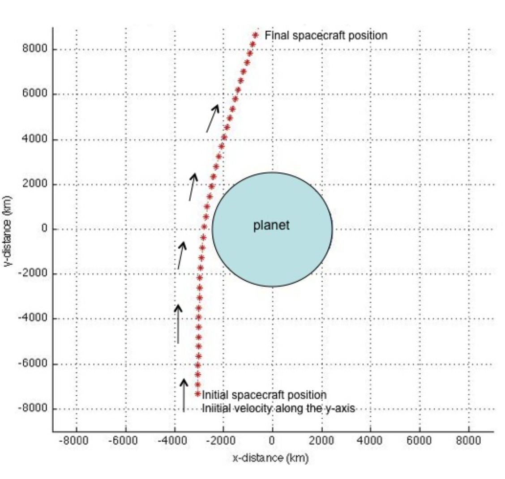
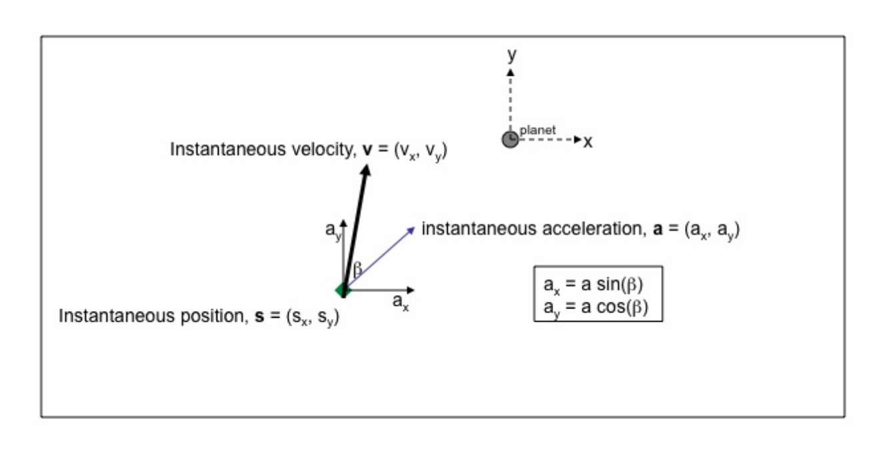
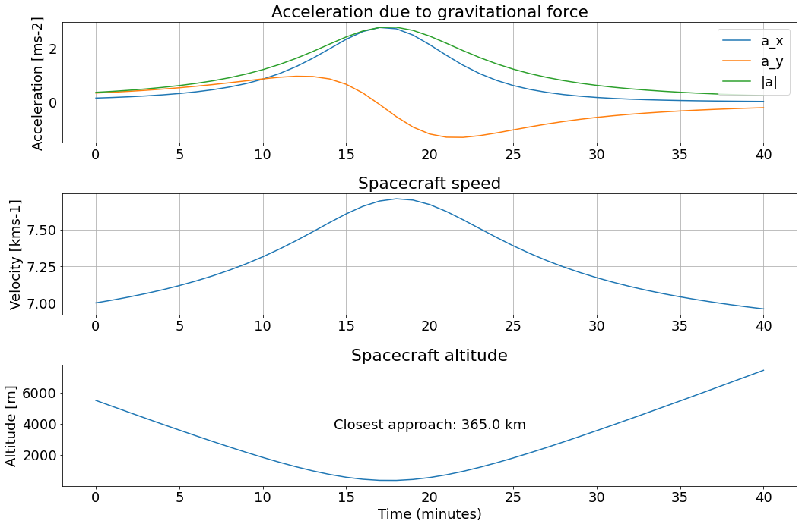

Assignment 2 - Flybys
Contents
Assignment 2 - Flybys¶
Spacecraft flybys of planets and moons.¶
1. Assignment Overview¶
This assignment is motivated by the use of flybys of planets / moons in spacecraft missions to alter a spacecraft’s trajectory (flight path). Planetary flybys can be used to not only change the direction of a spacecraft’s motion, but to also alter its speed. Such flybys are often referred to as “gravity assists” because the change to the spacecraft’s motion is enabled by the gravitational force of the planet on the spacecraft. For example, missions to the outer solar system typically use the gravity of Jupiter to provide a “boost” to the spacecraft’s speed, such that the spacecraft can actually make it to the outer solar system. In contrast, missions to the inner solar system typically use the gravity field of one or more planets to slow the spacecraft down enough that it can go into orbit around the desired planet. A good resource describing planetary gravity assists can be found here.
In this assignment we will construct a simplified planetary flyby. The simplifications are that we assume an otherwise “straight-line” path of the spacecraft (rather than starting with an elliptical orbit around the sun, or a hyberbolic trajectory into the outer solar system), and we assume that the planet is stationary during the flyby (in practice the planet is of course in an elliptical orbit around the Sun). In the assignment we will draw on much of what we have learned in the course to implement a numerical integration algorithm using python to compute a spacecraft’s acceleration, velocity and position as it flys by a planet. The assignment will also demonstrate how you can use python to produce numerical solutions to problems for which there is no simple analytical solution.
2. Coding Overview¶
For this assignment you will write 4 functions and call them with several main() functions. The functions are as follows:
The guts of your code will be a function
get_traj()that will return the acceleration, velocity and position vectors along the complete spacecraft trajectory.get_traj()will call three subfunctionsgravacc(), update_sc_vel_pos(), and checkinit().gravacc()will calculate the gravitational acceleration on the spacecraft at any given point along the trajectory.update_sc_vel_pos()will compute the instantaneous change in position and velocity of the spacecraft due to the gravitational acceleration caused by the planet.checkinit()will check that your initial spacecraft velocity and position are feasible.The
main()script(s) will callget_traj()for various initial (starting) conditions that I will give you. The main script(s) will contain the code to generate the requested figures or output in each section.
IMPORTANT POINTS:¶
The use of SI units is ESSENTIAL to this assignment. Make sure to convert ALL your length, mass and time variables into m, kg and seconds before doing any calculations. For plotting purposes it is more useful to use km, so convert m to km only for plotting.
The amount of code required for this assignment is not huge. For example, my version of
get_trajcontains only 13 lines of code and the subfunctionsgravacc,update_sc_vel_pos, andcheckinitcontain 5, 3 and 3 lines of code respectively, not including comment and help lines. However, you should be vigilent about being consistent in your use of variable names, and in not generating unecessary variables, otherwise your code (and thinking!) will get out of hand.Make sure your code is organized into easily readable, compact coding “blocks”, with appropriate comment lines, and separated by white space.
All functions must contain doc strings.
3. The Physics¶
Figure 1: Example of flyby trajectory 
{kind=link}
The set-up of the problem is quite straightforward. You need to read this section carefully to understand what is going on, and to be able to sketch out your algorithm for computing the spacecraft acceleration, velocity and position at each time-step during the flyby.
We have a spacecraft which is about to fly past a planet or moon. We will simplify the problem and look at it in a cartesian (x,y) geometry. The origin of our coordinate system is at the center of the planet (see Figure 1). The spacecraft motion is such that if the planet was not there, the spacecraft would be flying with constant velocity in the positive y-direction. Our spacecraft starts out with this velocity at some distance from the planet (bottom of Figure 1). Far away from the planet the spacecraft has constant velocity (remember Newton’s second law: no net force on the spacecraft implies constant momentum (\(m \vec{v}\)), and so constant velocity). As the spacecraft approaches the planet, it experiences a gravitational force due to the planet. The position vector, \(\vec{s}\) has both \(x\) and \(y\) components, so \(\vec{s}=s_{x} \hat{x}+s_{y} \hat{y}\). At a position \(\vec{s}\), Newton’s law of gravitation tells us that the magnitude of the force on the spacecraft, \(F_{sc}\), will be
where \(s\) is the distance of the spacecraft from the center of the planet, given by \(s=\sqrt{\left(s_{x}^{2}+s_{y}^{2}\right)}\). \(M_p\) is the mass of the planet, \(m_{sc}\) is the mass of the spacecraft, and G is the gravitational constant (= \(6.67 \times 10^{−11} m^3kg^{−1} s^{2}\))
The spacecraft will thus experience an instantaneous acceleration in a direction toward the center of the planet. We use \(\vec{a}\) to denote the acceleration vector:
The instantaneous acceleration vector, \(\vec{a}\), can be resolved into components along the x- and y- axes (See Figure 2). $\(\begin{equation} a_{x}=a \sin \beta \end{equation}\)\( \)\(\begin{equation} a_{y}=a \cos \beta \end{equation}\)$
Figure 2: 
{kind=link}
where \(a\) is the magnitude of the acceleration vector, \(a=\frac{G M_{p}}{s^{2}}\). \(\beta\) is the angle between the acceleration vector and the \(\hat y\) direction and can easily be found from the instantaneous position vector. \(\sin \beta\) and \(\cos \beta\) are given by:
The minus signs in (5) and (6) ensure that \(a_x\) and \(a_y\) are positive when \(s_x\) and \(s_y\) are respectively negative and vice-versa (i.e., in the figure, the spacecraft acceleration is towards the planet).
The spacecraft velocity is changed due to this acceleration; both the speed and the direction of the velocity vector change. This is easiest to see at the beginning of the spacecraft’s trajectory. Initially the spacecraft has a speed \(v_{y}^{\text {initial }}\) along the y-axis. The acceleration means that after a small time \(\Delta t\) the component of velocity along the y-axis is increased by a \(\Delta t\), so that \(v_{y}^{\text {new }}=v_{y}^{\text {initial }}+a_{y} \Delta t\). Similarly, the component of velocity in the x-direction is changed to \(v_{x}^{\text {new }}=v_{x}^{\text {initial }}+a_{x} \Delta t\), and in our problem, \(v_{x}^{\text {initial }}=0\). Since the new velocity now has non-zero \(x\)- and \(y\)- components its direction has been changed as well as the net speed.
We can generalize this so that at any point along the spacecraft’s trajectory we can compute the acceleration due to the planet, along with the resulting change in velocity and position over some small time increment \(\Delta t\). The equations for each component of velocity and position are as follows:
where \(v_{x}^{i+1}\) is the x-component of velocity at the \((i+1)’th\) time step, \((t^{i+1})\), \(v_{x}^{i}\) is the x-component of velocity at the i’th time, \((t^i)\) ,and the time interval \(t^{i+1} − t^i = \Delta t\). Similarly for \(v_{y}^{i+1}, s_{x}^{i+1}, s_{y}^{i+1}\) etc. The change in velocity and position after a time \(\Delta t\) are given by:
where \(a^i_x\) and \(a^i_y\) are the \(x\) and \(y\) components of acceleration at the time-step \(t^i\) initial position vector \((s_{x0}, s_{y0})\) and velocity vector \((v_{x0}, v_{y0})\) are specified at time, \(t = 0\), and if we know the mass of the planet \(M_p\) we can compute the complete spacecraft trajectory.
4. Set up the Core Functions¶
This section and the following section will help you outline your algorithm for coding up the flyby trajectory.
The guts of your code will be a function get_traj() that will return the acceleration, velocity and position vectors along the complete spacecraft trajectory. get_traj() should take as input the following arguments. If you specify any arguments as positional they should be in the following order.
initial position vector, \(\vec{s}_{0}=\left(s_{x 0}, s_{y 0}\right)\)
initial velocity vector, \(\vec{v}_{0}=\left(v_{x 0}, v_{y 0}\right)\)
time increment, \(\Delta t\) at which spacecraft acceleration, velocity, positions are updated
total time, \(t_\mathrm{f}\)
initial time, \(t_\mathrm{0}\) (default = 0 secs)
mass of planet, \(M_\mathrm{p}\) (default = Mercury mass)
get_traj() should return a dictionary containing 4 key:value pairs time,acc,vel,pos. The values for each key are numpy arrays containing time in seconds during the trajectory, and your full acceleration, velocity and position vectors. time will have shape (nt, ) and acc,vel,pos each have shape (nt, 2) where \(nt\) is the number of time steps, \(\Delta t\). (Note that \(nt = 1+(t_\mathrm{f}\Delta t)\) if you include the initial conditions as your first time step, or \(nt = tf /\Delta t\) if you don’t include them), and the columns return the \(x\) and \(y\) components of the position/velocity/acceleration vector.
get_traj() should call three functions gravacc, update_sc_vel_pos and checkinit:
gravaccshould calculate the gravitational acceleration on the spacecraft at each time step. It should take as input the instantaneous position vector, and the mass of the planet, and return as output the instantaneous acceleration vector.update_sc_vel_posshould compute the instantaneous change in position and velocity given by equations (11)–(14).update_sc_vel_posshould take as input the instantaneous acceleration and velocity vectors and the time increment, \(\Delta t\), and return as output the instantaneous change in position vector \((\Delta \vec{s})\) and change in velocity vector \((\Delta \vec{v})\).checkinitshould implement the following checks:
the starting position vector is such that the spacecraft starts out above the planetary surface!
the starting velocity is in the positive y-direction (spacecraft flying toward the planet not away from it!) If either of these conditions are not met, the program should terminate with a helpful error message.
Keep these core functions and any others you write in a file called assign2_funs.py and import that file into your main notebook for calculations.
5. Do a test run¶
For the remaining parts of this assignment you will write some pieces of code to compute the spacecraft trajectory given a series of initial conditions and parameters. We will use parameters that simulate the flybys of Mercury by the MESSENGER spacecraft in 2008 and 2009. These flybys were specifically designed to alter the spacecraft trajectory such that the spacecraft could be put into orbit around the planet in 2011.
Start by importing your functions file and any other packages you need¶
It will also be useful in this initial cell to declare a variable, \(R_\mathrm{p}\), the radius of Mercury, to use in spacecraft altitude determinations and for plotting. The spacecraft altitude is given by \(s − R_\mathrm{p}\) , where \(s= \left(s_{x}^{2}+s_{y}^{2}\right)^{1/2}\).
Doing a test calculation¶
Assign the following values to the various parameters needed. In your code, remember to convert everything to SI units – kg, m, s – before doing ANY calculations:
Mercury mass, \(M_\mathrm{p} = 3.3 \times 10^{23}\) kg
Mercury radius, \(R_\mathrm{p} = 2440\) km
Total time, \(t_\mathrm{f}\) = 40 minutes
Time increment, \(\Delta t = 60\) secs
Initial position, \(s_\mathrm{x 0}=-3050 \mathrm{~km}, s_\mathrm{y 0}=-3 R_{p}\)
Initial velocity, in positive y-direction with magnitude \(7\) km s\(^{−1}\)
The guts of your script will be the function call flyby_dict = get_traj(...), where ... is the list of input parameters to get_traj() and flyby_dict is the function’s output (a dictionary).
Make 2 figures. Your figure 1 should plot the spacecraft trajectory in the x, y plane, along with a circle to denote the cross-section of Mercury. This should produce a trajectory like that in my Figure 1 above. (Note that the annotations on my figure are extra and you need not add them). Figure 2 should contain 3 subplots. In the top one plot \(a_x, a_y, a\) versus time (where \(a\) is the magnitude of the acceleration vector), in the middle one plot the speed \(v\) versus time, and in the lower one plot spacecraft altitude (height above planet’s surface) versus time. Use a log scale on the y-axis for the spacecraft altitude plot. So that you can check your work at this point, your figure should look like my Figure 3 below. A useful diagnostic to print to the screen is the closest approach altitude – you should get 365 km.
Organizing your work¶
You can either put the code that does this test calculation in a function called main1() (or something more informative) in assign2._funs.py and call it from this notebook, passing main1 the input arguments it needs. The following sections you would then similarly write functions called e.g. main2() or something more informative. Alternatively, you might decide here and in the sections below to keep the main calculation code in this notebook and instead put the code that makes each figure into separate functions in the assign2._funs.py file, and call those functions e.g. plot_myfig1(...) from this notebook. Whatever you do this notebook should be easy to read with comments for the code.
Figure 3: 
{kind=link}
6. Numerical Convergence: Starting Conditions and Time Step¶
Explore what happens to the closest approach altitude, when you change the y-coordinate of the initial position (\(s_{y0}\)). Print a 2-column output that gives the \(s_{y0}\) coordinate in \(R_p\) and closest approach altitude in km for \(s_{y0}\) equal to \(-3R_p\), and then for 9 additional values of \(s_{y0}\), each one set to be double the previous value. Do this in a loop, doubling the \(s_{y0}\) value in each iteration. Each time you double \(s_{y0}\) you should double \(t_f\). (After you have your loop working you can check out what happens if you don’t double \(t_f\) …). You should find that as you increase the distance of the initial \(s_{y0}\) coordinate from the planet, the closest approach altitude decreases. The decrease is large initially but then gets smaller as the closest approach altitude converges towards a stable answer. What has happened is that although we had set up the algorithm for the numerical integration properly, the initial conditions were incorrect. To accurately assess how close the spacecraft will get to the planet, we need to start our calculation with the spacecraft far enough away from the planet that the gravitational force on the spacecraft due to the planet is negligible. Our initial guess at a starting position of \(s_{y0}\) of \(-3 R_p\) is not far enough since the gravitational force only falls off as 1 /(distance)\(^2\) . You’ll see that an initial value of more than \(-300 R_p\) is needed! However, there is also another issue that you’ll now investigate.
Hint 1 - depending how you are handling your initial conditions input arguments to get_traj, you may find it helpful to use copy.deepcopy to make copies of the initial condition variable so that you can update it without affecting your original values. You need to import copy, then if e.g. your initial conditions are stored in one variable called init_cond, the syntax to make a copy is init_cond2 = copy.deepcopy(init_cond).
Hint 2 - displaying your 2-column output: A pandas data frame is quite handy for this. You can index the closest approach altitudes in the table using the initial position y-coordinate variable \(s_{y0}\).
Set up another simulation: Set the \(s_{y0}\) variable to be \(s_{y0} = -96 R_p\). (Although it should be larger, this would result in the computations taking longer.) Set the total time, \(t_f\) to be 1280 minutes. Set up another variable \(a_\mathrm{target}\) for the target closest approach altitude. Set this altitude to be 195 km.
Now investigate the effect of the time increment \((\Delta t)\) used in the numerical integration. Start with \(\Delta t = 60\) seconds, compute the spacecraft trajectory, then halve the value of \(\Delta t\) used. Continue until the closest approach altitude \(a_c\) is within 2% of the target altitude, that is until the percentage error \(100*(a_c - a_\mathrm{target})/a_\mathrm{target}\) falls just below 2. This is best done using a
whileloop. Usetime.perf_counter()to measure the elapsed time for each \(\Delta t\). You’ll see that the computation time scales with the number of time steps.In Figure 3, make 2 subplots. In the top one show the percentage error in the closest approach altitude as a function of 1/\(\Delta t\). You should see smooth convergence of the results toward the desired target altitude, but at increasing computational expense. In fact, in our case the results converge only to within about 2% of the target altitude, because to converge more closely to the actual target altitude you would also need to use an initial \(s_{y0}\) position futher from the planet. In the lower figure plot the percentage error versus \(\Delta t\), and label your plot with the final \(\Delta t\) needed to reach the 2% error criterion above, and the computation time for that ∆t.
This concept of convergence is fundamental to numerical techniques. What you saw above is that in our case two parameters are important, the initial position of the spacecraft with respect to the planet and the time increment, \(\Delta t\). In the first exercise you saw that successively doubling the distance of the y-coordinate \(s_{y0}\) led to a decrease in the altitude of closest approach, and furthermore that as you got further away from the planet the answer (closest approach distance) changed less. In this case the solution was converging (meaning that eventually as we moved even further away the answer would no longer change). However, it was not converging to the right answer. This was because the time interval, \(\Delta t\) was too long. An implicit assumption in our numerical integration is that over the time interval \(\Delta t\) the gravitational force on the spacecraft remains constant. However in 60 seconds the spacecraft travels approximately 7\(*\)60 km = 420 km. When the spacecraft is close to the planet the gravitational force changes substantially over this time increment. Thus decreasing the the time increment increases the accuracy of the calculations. In practice we have found that we need to start a long way from the planet (more than 300 Mercury radii) and use a short time increment. This results in a computationally intensive calculation, and most of the calculations are not needed because they are being done at short time intervals while we are very far away from the planet. Can you think of a way to choose the time stepping to speed things up while retaining the accuracy needed? Write one or two sentences (3 max) on how you might do this.
7. Designing a Successful Flyby¶
Set up another simulation:
Set \(s_{y0} = −96R_p\). Set \(t_f\) to be 1280 minutes.
Include the target altitude variable \(a_\mathrm{target}\) and set it to be 195 km as in the section above.
Set \(\Delta t\) to be 5 seconds. We know from Section 6 that it should be less than 5 seconds but this takes a while to compute….If you like, when you are have working code for this section and have produced the plot requested you can check that changing \(\Delta t\) to the value you found you needed in Section 6 doesn’t change the answer here.
Using a nested loop evaluate the spacecraft trajectories for initial velocities \(v_{y0}\) ranging from 4.0 km/s to 8 km/s in 0.5 km/s intervals, and for initial x- positions \(s_{x0}\) that range from \(−(R_p + 4*a_\mathrm{target}\)) to \(−(R_p + a_\mathrm{target}\)) in intervals of \(a_\mathrm{target}\).
Figure 4. Make a contour map to show the closest approach altitude as a function of initial x-position (x-axis) and initial velocity (y-axis). Make clear the region of the plot that lies within 5 km of the target altitude (approximately our 2% criterion in part 6). Hint: You can plot a second set of contours with only two lines for atarget ± 5 km specifying the color and line thickness for those contours. Failed experiments (spacecraft crashes) should not be contoured. Note that it is best to NOT set spacecraft crashes to NaN, because the contour plot will look ugly. Instead keep the (unrealistic) spacecraft altitudes but don’t show these contours.
8. Extra Credit: Ice near Mercury’s South Pole¶
Set up another simulation:
In this part we will use the “failed” experiments from Part 7, to design a Mercury experiment analogous to the Lunar LCROSS mission that crashed into the South Pole of the Moon in search of water ice. Imagine that the x-coordinate in our problem points north, such that the point \((x = −Rp , y = 0)\) is Mercury’s south pole. Use the experiments from Section 7, to try to find one or two spacecraft starting position(s) \(s_{x0}\) and speeds \(v_{y0}\) that result in a crash at a y-coordinate that lies within 500 km of the south pole. Your starting position, \(s_{x0}\) must be less than \(−1R_p\) (i.e. the spacecraft must not initially have been on a direct collision course with the planet).
When you have found one or two positions that work, plot your spacecraft trajectory as far as the crash site. Call this Figure 5. Label your crash site position and print the initial conditions \((v_{y0}, s_{x0})\) that resulted in this crash site.
Hint: Using a version of Figure 4 in which you show your contours for the “failed” experitments is helpful to narrow your search of starting x-position, sx0 and y-speed, vy0.
9. Upload to Canvas the following by Fri Dec 3rd, 4pm.¶
A clean notebook - name it
assign2.ipynbthat contains your code, comments, any word answers clearly indicated in markdown cells. Include your results for Sections 5, 6, 7 and 8 (if you did 8). Include the names of your assignment partner in the notebook.A .py file containing the requested functions and any others you wrote to keep your code clean: name it
assign2_funs.py